Zasady gry w szachy
Zasad dotyczących samej rozgrywki jest stosunkowo niewiele. Po pierwsze w grze biorą udział dwie osoby, które wykonują swoje posunięcia na zmianę. Pierwszy ruch zawsze należy do gracza posiadającego biały kolor. Podczas swojej tury można wykonać ruch tylko jedną figurą szachową (wyjątkiem jest roszada). Jeżeli podczas swojego ruchu chcemy zbić bierkę przeciwnika, zdejmujemy ją z szachownicy, a własną stawiamy na jej miejscu. Poza tym pozostaje nam tylko zaznajomić się z bierkami szachowymi.
Wydawałoby się najsłabsze bierki na szachownicy. Poruszają się tylko o jedno pole naprzód. Każdy pionek, który nie wykonał jeszcze posunięcia, może wyjątkowo ruszyć się o 2 pola. Pionki zbijają na ukos w kierunku „do przodu”. Pionek, który dotrze do ostatniego rzędu (ósma linia dla białych lub pierwsza dla czarnych) musi dokonać „promocji” – zmienia się w dowolną figurę szachową w swoim kolorze. Gracze najczęściej wybierają hetmana.
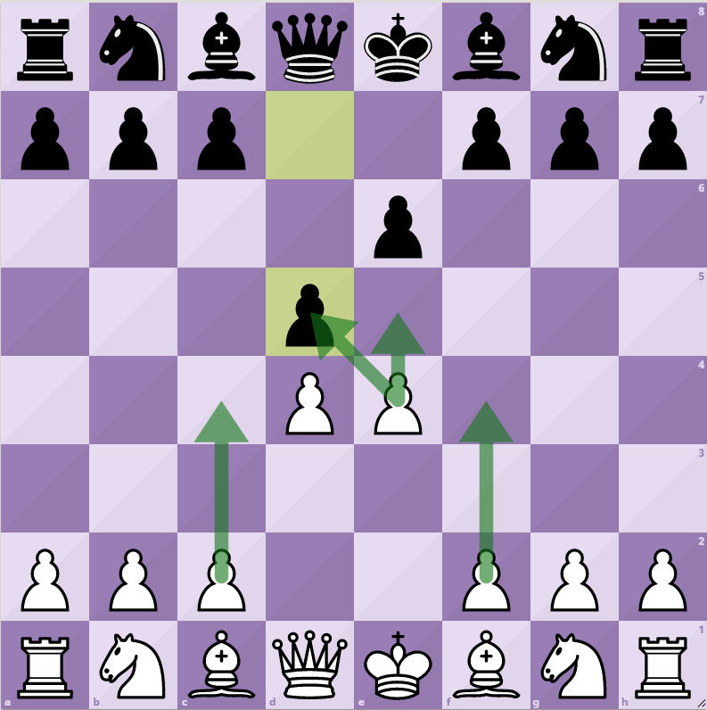Porusza się i zbija o dowolną liczbę pól po liniach prostych. Nie może przeskoczyć przez bierki własne lub przeciwnika. Może zbić pierwszą napotkaną na swojej drodze bierkę w przeciwnym kolorze.
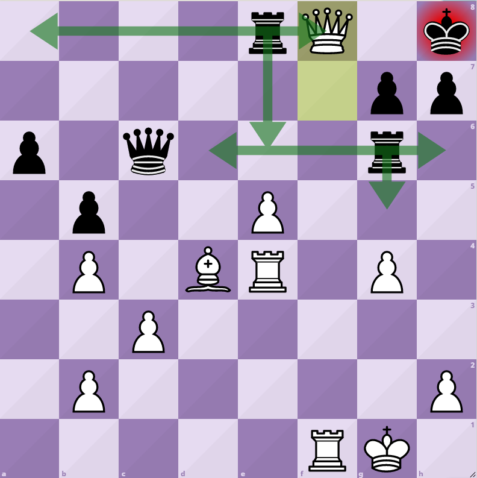Najłatwiej rozpoznać go po tiarze biskupiej (w języku angielskim gońca nazywa się biskupem - bishop). W zachodniej części Polski goniec często jest nazywany laufrem (z niem. „die Läufer“ – biegacz/goniec). Porusza się o dowolną liczbę pól po diagonali (linia ukośna).
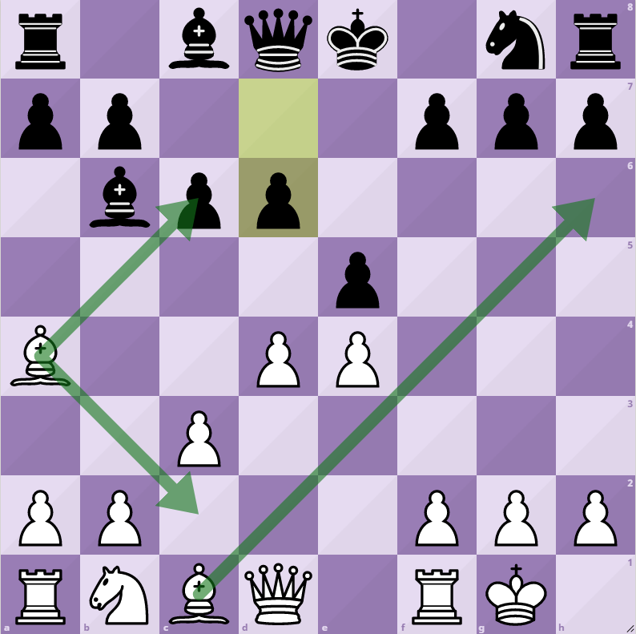Często nazywany królową (queen) lub damą (die Dame). Najpotężniejsza bierka w naszej armii. Porusza się zarówno po liniach prostych jak i na ukos. W ten sam sposób zbija bierki przeciwnika i zajmuje ich miejsce.
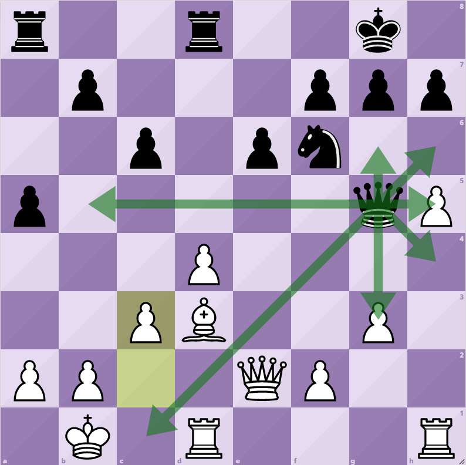Często nazywany konikiem. Jedyna figura szachowa, która potrafi „przeskoczyć” nad pozostałymi bierkami na szachownicy – zarówno własnymi, jak i przeciwnika. Dzięki tej umiejętności świetnie radzi sobie w zatłoczonych pozycjach. Figury szachowe na jego drodze nie blokują mu ruchów. Skoczek może poruszyć się na jedno z najbliższych nie sąsiadujących z nim pól, które nie znajduje się ani na linii prostej, ani ukośnej. Mimo że sama definicja wygląda na skomplikowaną to istnieje łatwy sposób na przyswojenie sobie ruchów skoczkiem dzięki wierszykowi: „jeden, dwa na trzy w bok – taki jest konika skok”.
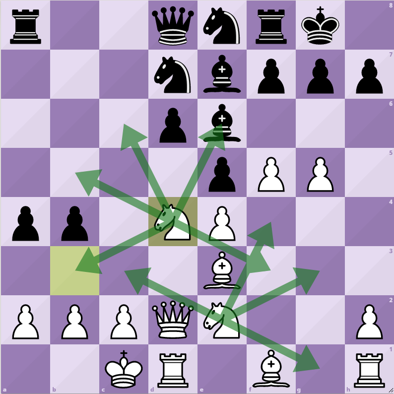Pomimo, że nie jest zbyt silny to na nim właśnie koncentruje się uwaga zawodników. Celem gry jest pojmanie króla przeciwnika co sprawia, że jest najcenniejszą figurą. Król porusza się i zbija w każdym kierunku o jedno pole – zarówno po liniach prostych jak i na ukos. Nasz monarcha ma swoje ograniczenia, zabronione jest narażanie go na niebezpieczeństwo. Nie wolno postawić króla na polu na którym mógłby zostać zbity. Króla najłatwiej rozpoznać po krzyżyku na jego „koronie”, w przypadku jego braku porównujemy wielkość naszych bierek - król jest zawsze najwyższy.
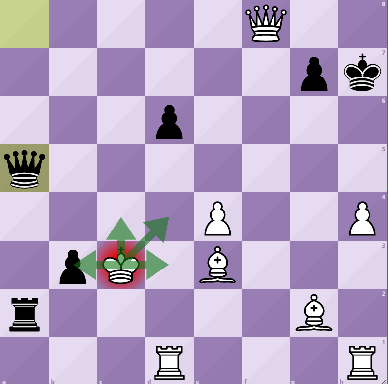Jeżeli jeden z graczy zaatakuje króla przeciwnika – mówimy „szach” Oznacza to, że monarcha jest w niebezpieczeństwie. Gracz, który został zaszachowany, jest zobowiązany niezwłocznie do obrony swojego dowódcy. Może dokonać tego na 3 sposoby:
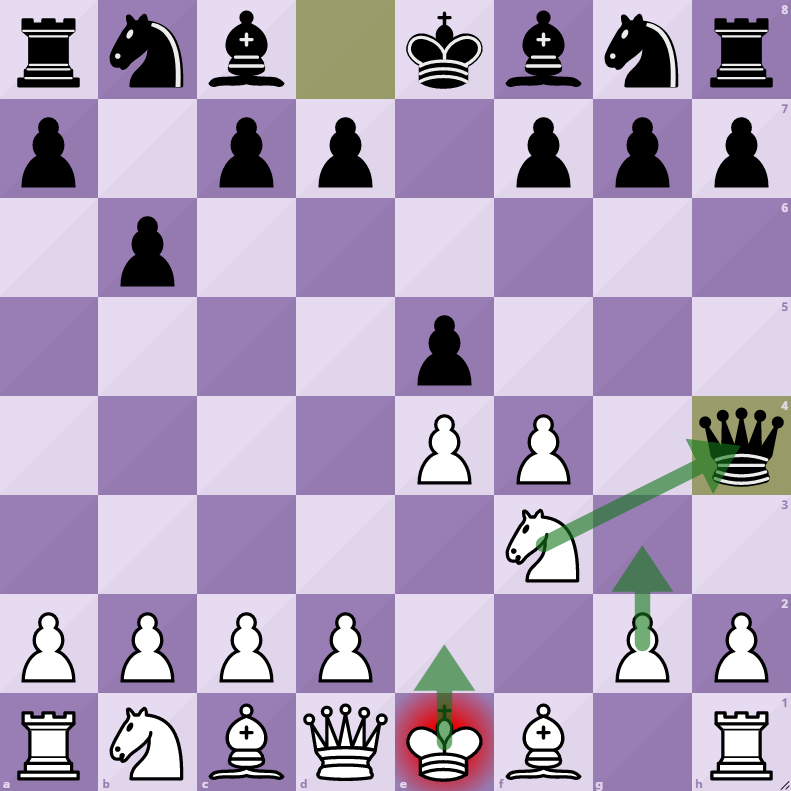
Sytuację, w której jeden z zawodników dał szacha, a jego przeciwnik nie może uratować króla w kolejnym posunięciu nazywamy matem. Mat kończy partię.
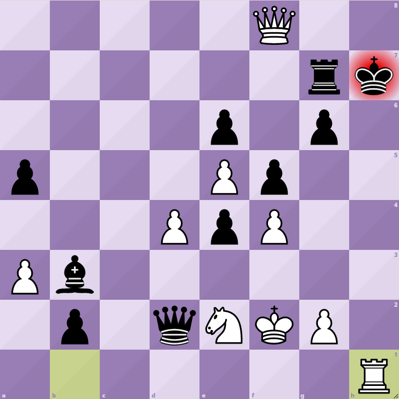
Partia szachów nie zawsze kończy się zwycięstwem jednej ze stron. Często zdarza się, że gracze zbiją sobie niemal wszystkie bierki, a na szachownicy zostają tylko króle. W takiej sytuacji rozgrywka kończy się remisem. Może się też zdarzyć, że jedna ze stron nie może wykonać żadnego legalnego posunięcia, a jednocześnie król nie jest szachowany. W takiej sytuacji mamy do czynienia z patem.
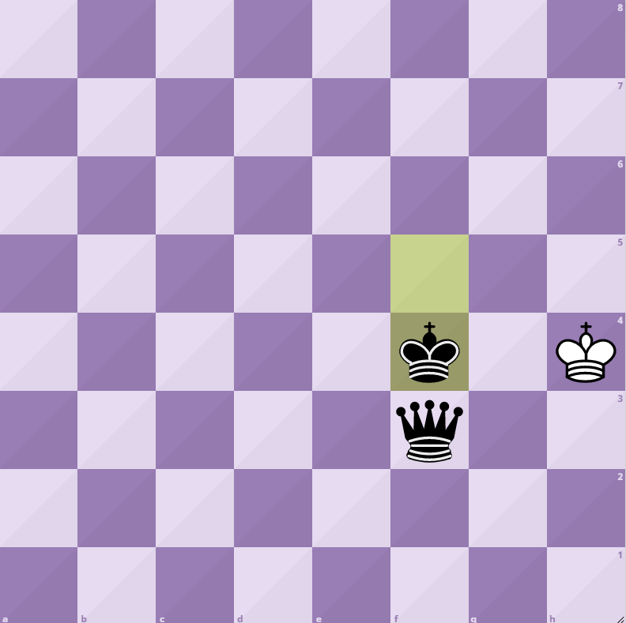
W sytuacji gdy pomiędzy jedną z wież a królem nie ma żadnych sojuszniczych figur, pola między królem a wieżą nie są w zasięgu żadnej z figur przeciwnika i ani wieża, ani król nie wykonali jeszcze żadnego ruchu, można zrobić roszadę.
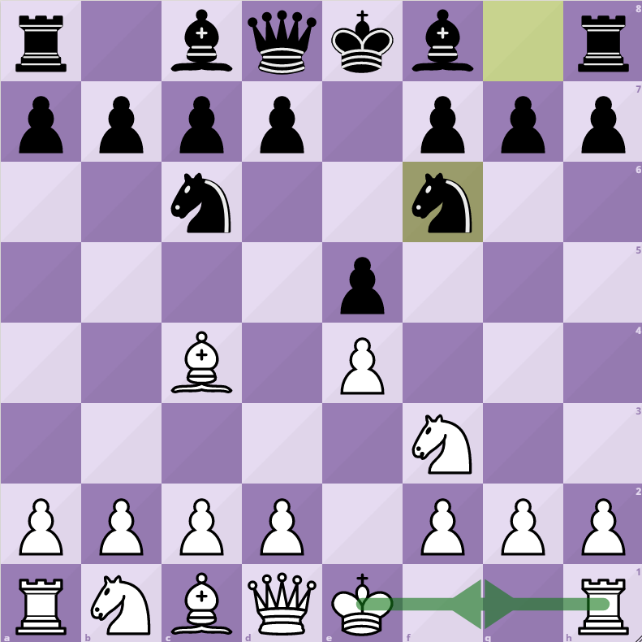
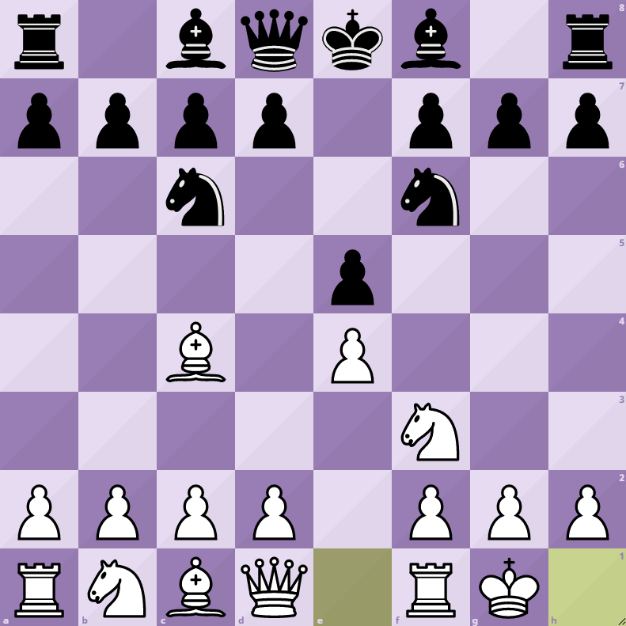
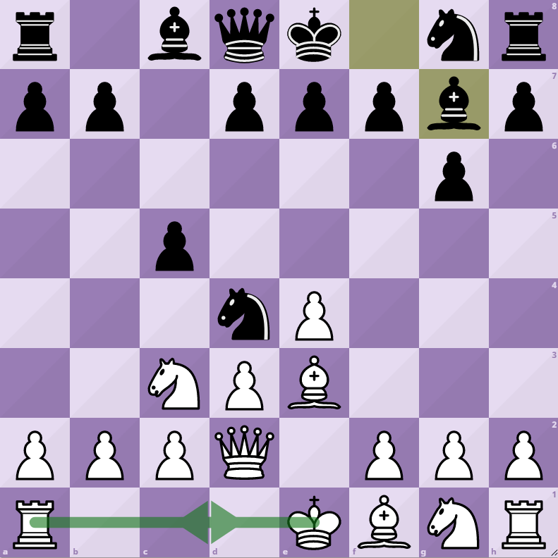
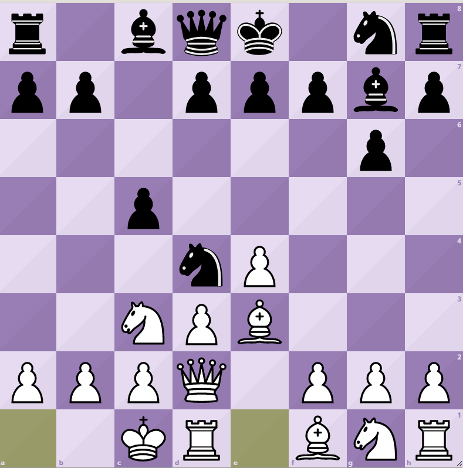